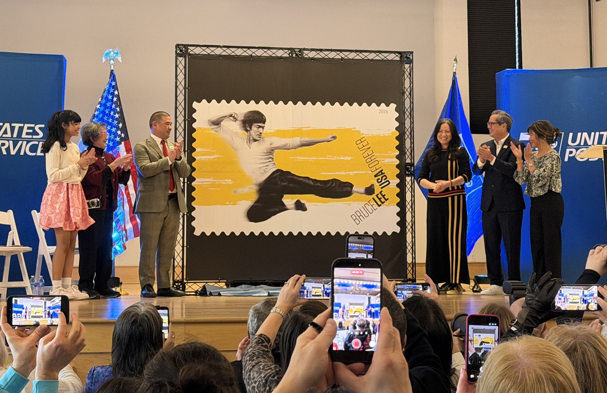
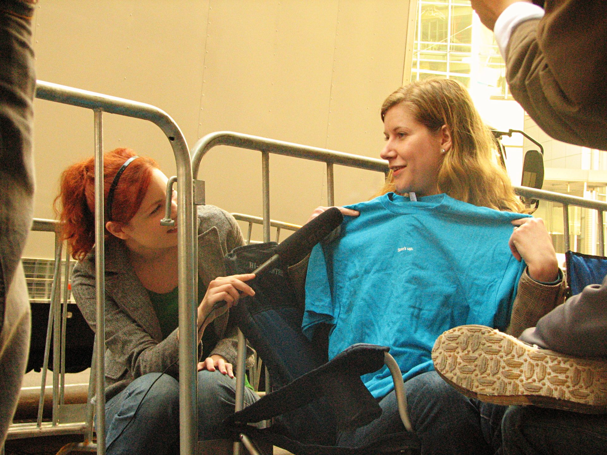

Entry Ticket
Spelling Test
Write down the words you hear
Spelling Test — Answers
Swap and mark.
| 1 | nowhere | A2 |
| 2 | chip | A2 |
| 3 | headache | A2 |
| 4 | active | A2 |
| 5 | belong | A2 |
| 6 | employment | B1 |
| 7 | press | B1 |
Spelling Test — Answers
Continue marking.
| 8 | murder | B1 |
| 9 | friendship | B1 |
| 10 | pure | B2 |
| 11 | dull | B2 |
| 12 | approach | B2 |
| 13 | passive | C1 |
| 14 | continually | C1 |
What genres are these?

Movie Vocabulary
Listen and repeat
| blockbuster | set |
| cast | soundtrack |
| performance | special effects |
| plot | trailer |
| scene | screenplay |
Exercise 1
Open your books to page 122.
Choose the correct answers to complete the movie review.
The Shape of Water
Check your answers.
| 1 | Scene / Screenplay |
| 2 | blockbuster / trailer |
| 3 | plot / set |
| 4 | performance / cast |
| 5 | cast / plot |
| 6 | special effects / trailers |
| 7 | soundtracks / scenes |
| 8 | screenplay / soundtrack |
Compound adjectives
Compound adjectives
Can you guess the meaning?
Task 3
Complete the sentences with compound adjectives.
Task 3 — Answers
Check your answers.
| 1 | I prefer old-fashioned movie theaters. |
| 2 | The movie only had short-lived success. |
| 3 | The action is neverending! |
| 4 | A powerful, hard-hitting movie about racism. |
| 5 | Two highly respected movie directors. |
| 6 | It was groundbreaking because it was filmed on iPhone. |
Documentaries
Watch this clip
What do you notice?
Features of documentaries
| Genre | informative & educational |
| Purpose | to inform & raise awareness, not just entertain |
| Production | real footage, voice-over, shot on location |
Task 4
Match the sentence halves.
Task 4 — Answers
Task 4 — Answers
Word forms
thrill → thrilling

Task 5
Complete the comments. Use the correct form.
Task 5 — Answers
Check your answers.
| 1. shot (The last documentary I watched was shot in Africa.) |
| 2. educational (I've learned from educational programs.) |
| 3. real-life issues (documentaries that deal with real-life issues) |
| 4. voice-over (I'd love to do the voice-over!) |
| 5. entertaining (I just don't find them very entertaining.) |
Structured Discourse
1. Opinion — What do you think?
2. Reason — Why do you think that?
3. Story — Who? What? Where? When? Why? How?
Model — Ex 2, Q1
I think a good screenplay is more important than a good soundtrack. Why? Because the story is what makes us care about the characters. For example, in Titanic, the screenplay makes us fall in love with Jack and Rose. We feel their happiness and their sadness. Without a good story, even beautiful music means nothing. Another example is Inception — it has a very complex plot, but the screenplay makes it easy to follow. We care about Cobb and we want him to succeed. I also love The Dark Knight. The screenplay is so well written that we understand why the Joker does what he does. We don't agree with him, but we understand him. That's what a good screenplay does — it makes us think and feel. A soundtrack can add emotion, but it can't create the story. The story comes first every time. So next time you watch a movie, pay attention to the screenplay. Is the story well told? Does it make you care? If yes, then the screenplay is doing its job.
Questions?
Any questions about what we've learned today?